Introduction to corncob
Bryan D Martin
2024-08-20
Source:vignettes/corncob-intro.Rmd
corncob-intro.RmdVignette Information
We thank Dr. Thea Whitman for kindly providing us with the example data set we use for this vignette. You can read more about this data in Whitman, Thea, et al. “Dynamics of microbial community composition and soil organic carbon mineralization in soil following addition of pyrogenic and fresh organic matter.” The ISME Journal 10.12 (2016): 2918.
We also use IBD microbiome data from Papa, Eliseo, et al. “Non-Invasive Mapping of the Gastrointestinal Microbiota Identifies Children with Inflammatory Bowel Disease.” PLoS One 7(6), e39242. The data are made available by Duvallet, Claire, et al. (2017). “MicrobiomeHD: the human gut microbiome in health and disease” [Data set]. Zenodo. We thank the authors for making their data open source and easily accessible.
Introduction
Effectively modeling microbial relative abundance poses a number of statistical challenges, including:Here, we introduce corncob, an individual taxon
regression model that uses abundance tables and sample data.
corncob is able to model differential abundance and
differential variability, and addresses each of the challenges presented
above.
Note that in order to follow along with this tutorial (but not to use
corncob!) you will need to have phyloseq
installed. We will check if you have phyloseq installed,
and if you do not then you can read the following code but it will not
be run. See the vignette corncob-intro-no-phyloseq.Rmd for
a version of this vignette without a dependence on
phyloseq.
phy <- requireNamespace("phyloseq", quietly = TRUE) == TRUE## [1] "phyloseq is installed: TRUE"Install corncob using:
remotes::install_github("statdivlab/corncob")To begin, we load our example data set as three different data frames
and then combine them together into a phyloseq object.
library(corncob)
library(phyloseq)
library(magrittr)
data(soil_phylo_sample)
data(soil_phylo_otu)
data(soil_phylo_taxa)
soil_phylo <- phyloseq::phyloseq(phyloseq::sample_data(soil_phylo_sample),
phyloseq::otu_table(soil_phylo_otu, taxa_are_rows = TRUE),
phyloseq::tax_table(soil_phylo_taxa))If you are unfamiliar with phyloseq, we can view a
description of the data using:
soil_phylo## phyloseq-class experiment-level object
## otu_table() OTU Table: [ 7770 taxa and 119 samples ]
## sample_data() Sample Data: [ 119 samples by 5 sample variables ]
## tax_table() Taxonomy Table: [ 7770 taxa by 7 taxonomic ranks ]We now see that we have an OTU abundance table with 7770 OTUs and 119
samples. We can extract using otu_table(). Let’s examine a
small subset of our data in more detail.
otu_table(soil_phylo)[1:3, 1:3]## OTU Table: [3 taxa and 3 samples]
## taxa are rows
## S009 S204 S112
## OTU.43 350 74 300
## OTU.2 1796 4204 1752
## OTU.187 280 709 426We can also see that we have 5 sample variables. We can extract this
using sample_data(). Let’s again examine a small subset in
more detail.
sample_data(soil_phylo)[1:3, ]## Plants DayAmdmt Amdmt ID Day
## S009 1 01 1 D 0
## S204 1 21 1 D 2
## S112 0 11 1 B 1Finally, we have a taxonomy table with 7 taxonomic ranks.
tax_table(soil_phylo)[1:3, ]## Taxonomy Table: [3 taxa by 7 taxonomic ranks]:
## Kingdom Phylum Class Order
## OTU.43 "Bacteria" "Nitrospirae" "Nitrospira" "Nitrospirales"
## OTU.2 "Bacteria" "Proteobacteria" "Alphaproteobacteria" "Rhizobiales"
## OTU.187 "Bacteria" "Acidobacteria" "Acidobacteriia" "Acidobacteriales"
## Family Genus Species
## OTU.43 "Nitrospiraceae" "Nitrospira" ""
## OTU.2 "Bradyrhizobiaceae" "Bradyrhizobium" ""
## OTU.187 "Koribacteraceae" "" ""Fitting a Model
Now, let’s set up our model.
First, let’s subset our samples to only include those with the
DayAmdmt covariate equal to 11 or 21 and then collapse the
samples to the phylum level.
soil <- soil_phylo %>%
phyloseq::subset_samples(DayAmdmt %in% c(11,21)) %>%
phyloseq::tax_glom("Phylum") Let’s examine the data and the taxonomy table again.
soil## phyloseq-class experiment-level object
## otu_table() OTU Table: [ 39 taxa and 32 samples ]
## sample_data() Sample Data: [ 32 samples by 5 sample variables ]
## tax_table() Taxonomy Table: [ 39 taxa by 7 taxonomic ranks ]
tax_table(soil)[1:5, ]## Taxonomy Table: [5 taxa by 7 taxonomic ranks]:
## Kingdom Phylum Class Order Family Genus Species
## OTU.19 "Bacteria" "Acidobacteria" NA NA NA NA NA
## OTU.1 "Bacteria" "Proteobacteria" NA NA NA NA NA
## OTU.15 "Bacteria" "Gemmatimonadetes" NA NA NA NA NA
## OTU.3 "Bacteria" "Actinobacteria" NA NA NA NA NA
## OTU.133 "Bacteria" "[Thermi]" NA NA NA NA NANote that collapsing the samples is not necessary, and this model can work at any taxonomic rank. However, we will later be fitting a model to every taxa. We can see that by agglomerating taxa to the phylum level, we have gone from from 7770 to 40 taxa. Thus we collapse in order to increase the speed for the purposes of this tutorial.
Now we fit our model. We will demonstrate with Proteobacteria, or OTU.1.
For now, we will not include any covariates, so we use
~ 1 as our model formula responses.
corncob <- bbdml(formula = OTU.1 ~ 1,
phi.formula = ~ 1,
data = soil)Interpreting a Model
First, let’s plot the data with our model fit on the relative abundance scale. To do this, we simply type:
plot(corncob, B = 50)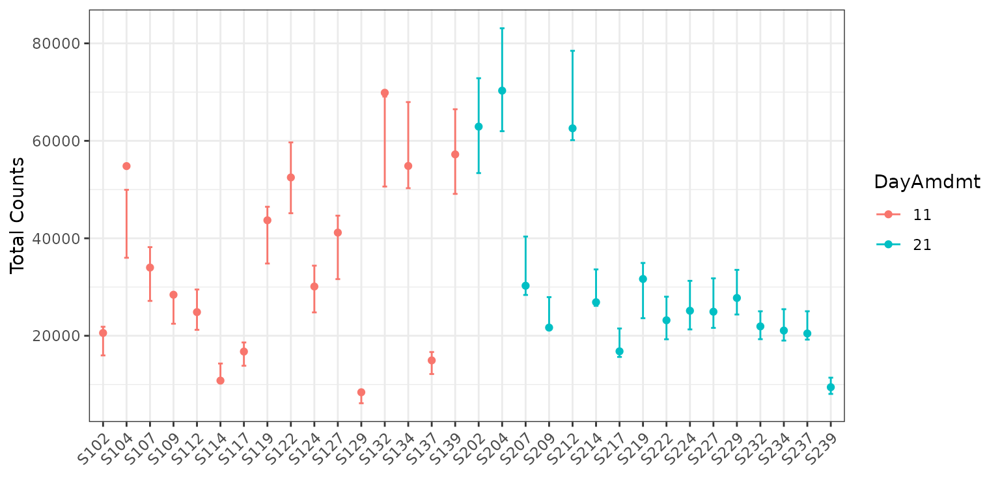
The points represent the relative abundances. The bars represent the
95% prediction intervals for the observed relative abundance by sample.
The parameter B determines the number of bootstrap
simulations used to approximate the prediction intervals. For purposes
of this tutorial, we use a small value B = 50 for
computational purposes, but recommend a higher setting for more accurate
intervals, such as the default B = 1000.
Now let’s look at the same plot, but on the counts scale with 95%
prediction intervals (since counts is not a parameter). To do this, we
add the option total = TRUE to our plotting code.
plot(corncob, total = TRUE, B = 50)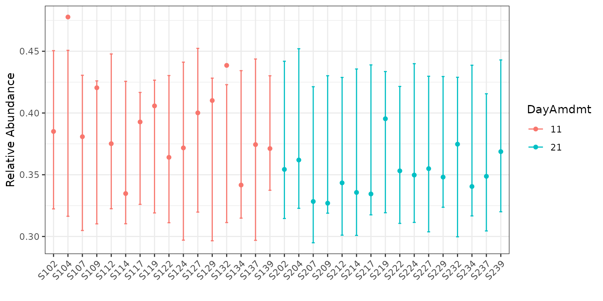
Finally, let’s color the plot by the DayAmdmt covariate.
To do this, we add the option color = "DayAmdmt" to our
plotting code.
plot(corncob, total = TRUE, color = "DayAmdmt", B = 50)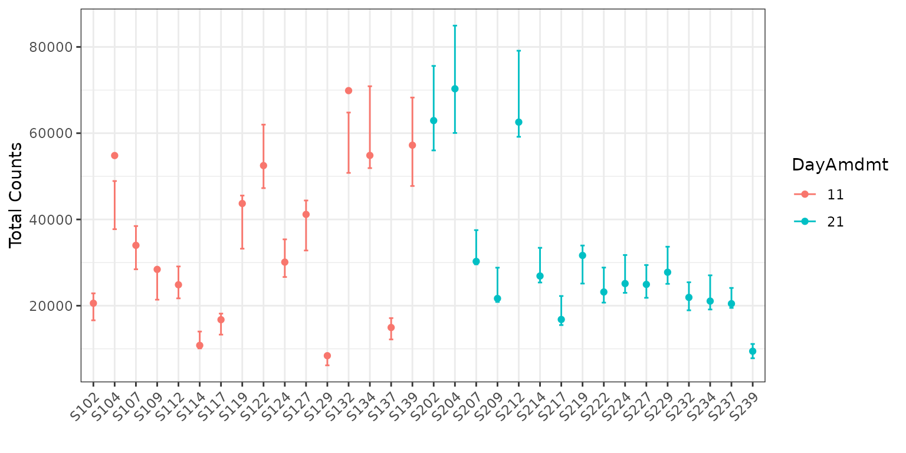
plot(corncob, color = "DayAmdmt", B = 50)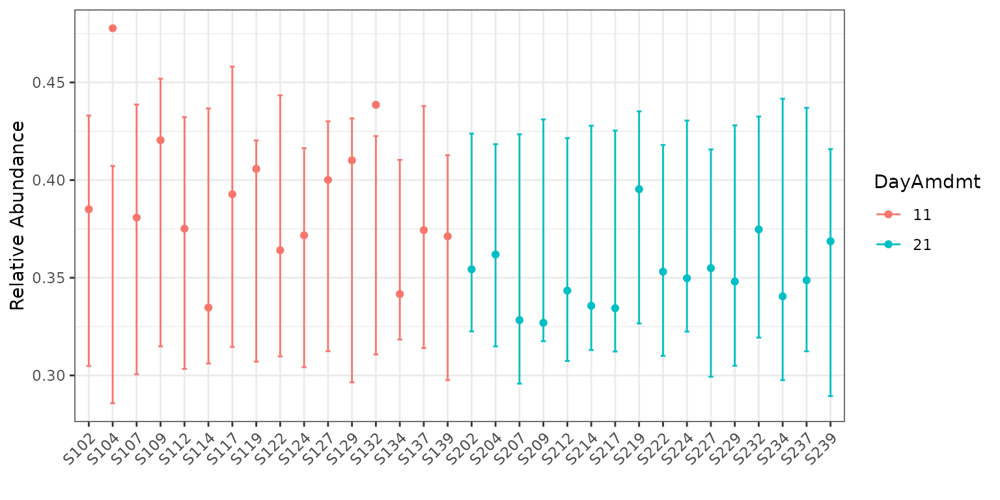
Notice that this plot also reorders our samples so that groups appear together so that they are easier to compare.
We can observe on this plot that it might be of interest to
distinguish between the two groups with covariates. The average
empirical relative abundance for the samples with
DayAmdmt = 21 tends to be lower and less variable than the
samples with DayAmdmt = 11.
Adding covariates
Let’s try modeling the expected relative abundance and the
variability of the counts with DayAmdmt as a covariate. We
do this by modifying formula and phi.formula
as:
corncob_da <- bbdml(formula = OTU.1 ~ DayAmdmt,
phi.formula = ~ DayAmdmt,
data = soil)Let’s also plot this data on both the total count and relative abundance scales.
plot(corncob_da, color = "DayAmdmt", total = TRUE, B = 50)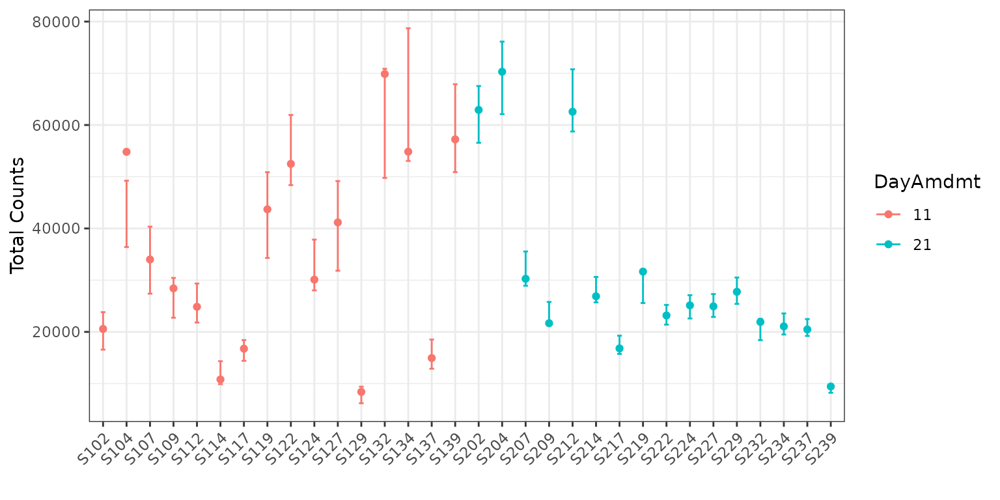
plot(corncob_da, color = "DayAmdmt", B = 50)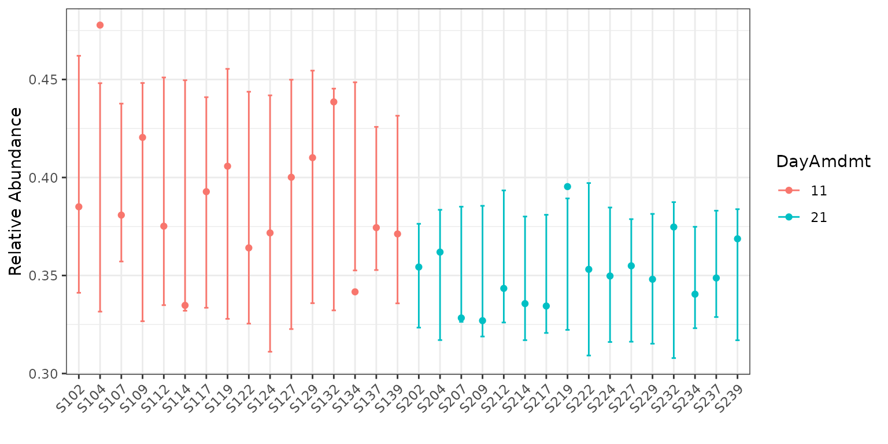
Visually, the model with covariates seems to provide a much better fit to the data, but how can we compare the two models statistically?
Model Selection
Let’s use a likelihood ratio test to select our final model for this taxon. We want to test the null hypothesis that the likelihood of the model with covariates is equal to the likelihood of the model without covariates. To do this test, we use:
lrtest(mod_null = corncob, mod = corncob_da)## [1] 4.550571e-05We obtain a p-value much smaller than a cut-off of 0.05. Therefore we conclude that there is a statistically significant difference in the likelihood of the two models. Thus, we probably want to use the model with covariates for this taxon.
Parameter Interpretation
Now that we have chosen our model, let’s interpret our model output. To see a summary of the model, type:
summary(corncob_da)##
## Call:
## bbdml(formula = OTU.1 ~ DayAmdmt, phi.formula = ~DayAmdmt, data = soil)
##
##
## Coefficients associated with abundance:
## Estimate Std. Error t value Pr(>|t|)
## (Intercept) -0.44595 0.03604 -12.375 7.18e-13 ***
## DayAmdmt21 -0.16791 0.04067 -4.129 0.000297 ***
## ---
## Signif. codes: 0 '***' 0.001 '**' 0.01 '*' 0.05 '.' 0.1 ' ' 1
##
##
## Coefficients associated with dispersion:
## Estimate Std. Error t value Pr(>|t|)
## (Intercept) -5.3077 0.3537 -15.008 6.44e-15 ***
## DayAmdmt21 -1.3518 0.5029 -2.688 0.012 *
## ---
## Signif. codes: 0 '***' 0.001 '**' 0.01 '*' 0.05 '.' 0.1 ' ' 1
##
##
## Log-likelihood: -286.53This output will look familiar if you have done regression analysis in R in the past. Covariates associated with the expected relative abundance are presented separately from covariates associated with the variance of the counts are preceded by.
From this model summary, we can see that the DayAmdmt21
abundance coefficient is negative and statistically significant. This
suggests that this taxon is differentially-abundant across
DayAmdmt, and that samples with DayAmdmt = 21
are expected to have a lower relative abundance. This matches what we
saw from the observed abundances.
We can also see that the DayAmdmt21 dispersion
coefficient is negative and statistically significant. This suggests
that this taxon is differentially-variable across DayAmdmt,
and that samples with DayAmdmt = 21 are expected to have a
lower variability. This matches what we saw from the observed
abundances.
Analysis for Multiple Taxa
What if we want to test all the taxa in our data to see if they are
differentially-abundant or differentially-variable? We use the
differentialTest function. It will perform the above tests
on all taxa, and it will control the false discovery rate to account for
multiple comparisons.
Next, we use the differentialTest command. We specify
the covariates of our model using formula and
phi.formula as before, except we no longer include the
response term because we are testing multiple taxa. We also specify
which covariates we want to test for by removing them in the
formula_null and phi.formula_null
arguments.
The difference between the formulas and the null version of the
formulas are the variables that we test. We will go through several
examples, starting with a test for differential abundance across the
DayAmdmt coefficient.
We set fdr_cutoff to be our controlled false discovery
rate.
set.seed(1)
da_analysis <- differentialTest(formula = ~ DayAmdmt,
phi.formula = ~ DayAmdmt,
formula_null = ~ 1,
phi.formula_null = ~ DayAmdmt,
test = "Wald", boot = FALSE,
data = soil,
fdr_cutoff = 0.05)We can see the output of the function by calling it:
da_analysis## Object of class differentialTest
##
## $p: p-values
## $p_fdr: FDR-adjusted p-values
## $significant_taxa: taxa names of the statistically significant taxa
## $significant_models: model summaries of the statistically significant taxa
## $all_models: all model summaries
## $restrictions_DA: covariates tested for differential abundance
## $restrictions_DV: covariates tested for differential variability
## $discriminant_taxa_DA: taxa for which at least one covariate associated with the abundance was perfectly discriminant
## $discriminant_taxa_DV: taxa for which at least one covariate associated with the dispersion was perfectly discriminant
##
## plot( ) to see a plot of tested coefficients from significant taxaWe can see a list of differentially-abundant taxa using:
da_analysis$significant_taxa## [1] "OTU.1" "OTU.15" "OTU.8" "OTU.69" "OTU.6" "OTU.59"
## [7] "OTU.695" "OTU.628" "OTU.703" "OTU.908" "OTU.1570" "OTU.417"
## [13] "OTU.584" "OTU.1672"In this case, we identified several taxa that are
differentially-abundant across DayAmdmt (out of the 39 taxa
tested).
We can see a list of differentially-variable taxa using:
set.seed(1)
dv_analysis <- differentialTest(formula = ~ DayAmdmt,
phi.formula = ~ DayAmdmt,
formula_null = ~ DayAmdmt,
phi.formula_null = ~ 1,
data = soil,
test = "LRT", boot = FALSE,
fdr_cutoff = 0.05)
dv_analysis$significant_taxa## [1] "OTU.19" "OTU.69" "OTU.628" "OTU.703" "OTU.417"We can switch the OTU labels to taxonomic labels using
otu_to_taxonomy. We supply our OTU labels as strings for
the OTU argument. We supply the phyloseq
object for the data argument.
otu_to_taxonomy(OTU = da_analysis$significant_taxa, data = soil)## OTU.1 OTU.15
## "Bacteria_Proteobacteria" "Bacteria_Gemmatimonadetes"
## OTU.8 OTU.69
## "Bacteria_Bacteroidetes" "Bacteria_Cyanobacteria"
## OTU.6 OTU.59
## "Bacteria_Firmicutes" "Bacteria_Planctomycetes"
## OTU.695 OTU.628
## "Bacteria_Armatimonadetes" "Bacteria_Spirochaetes"
## OTU.703 OTU.908
## "Bacteria_Elusimicrobia" "Bacteria_BRC1"
## OTU.1570 OTU.417
## "Bacteria_OP3" "Bacteria_FBP"
## OTU.584 OTU.1672
## "Bacteria_Chlorobi" "Bacteria_TM6"
otu_to_taxonomy(OTU = dv_analysis$significant_taxa, data = soil)## OTU.19 OTU.69 OTU.628
## "Bacteria_Acidobacteria" "Bacteria_Cyanobacteria" "Bacteria_Spirochaetes"
## OTU.703 OTU.417
## "Bacteria_Elusimicrobia" "Bacteria_FBP"In this case, we identified several taxa that are
differentially-variable across DayAmdmt (out of the 40 taxa
tested).
We can examine a subset of the p-values of our tests using:
da_analysis$p[1:5]## OTU.19 OTU.1 OTU.15 OTU.3 OTU.133
## 6.509417e-01 3.642734e-05 3.270448e-13 3.703096e-01 1.031419e-01We can examine a subset of the p-values after controlling for the false discovery rate using:
da_analysis$p_fdr[1:5]## OTU.19 OTU.1 OTU.15 OTU.3 OTU.133
## 7.811301e-01 1.457094e-04 3.924537e-12 5.172748e-01 2.062838e-01where the values are now adjusted to control the false discovery rate at 0.05.
We can also plot the model coefficients of our results:
plot(da_analysis)
Here, we can see that for Bacteria_Armatimonadetes, the
effect of DayAmdmt21 is positive compared to the baseline
(in this case, DayAmdmt11).
Finally, we can see a list of any taxa for which we were not able to fit a model using:
## [1] "OTU.4206" "OTU.8773" "OTU.8219"In this case, we weren’t able to fit OTU.4206
automatically. It’s worthwhile to investigate the OTU individually if
this is the case. First let’s check what phylum this represents.
otu_to_taxonomy(OTU = "OTU.4206", data = soil)## OTU.4206
## "Bacteria_GN04"It may be that the model is overparameterized because there aren’t enough observations, or it may just be that the initializations were invalid for that taxa and it needs to be re-evaluated with new initializations.
Let’s first try examining the data.
otu_table(soil)["OTU.4206"]## OTU Table: [1 taxa and 32 samples]
## taxa are rows
## S204 S112 S134 S207 S202 S139 S122 S212 S117 S104 S214 S109 S217 S229
## OTU.4206 0 0 0 0 0 0 0 0 0 0 0 0 0 0
## S132 S209 S227 S107 S237 S224 S127 S137 S114 S124 S119 S219 S232 S129
## OTU.4206 0 0 0 0 0 0 0 0 0 0 0 0 0 0
## S102 S234 S222 S239
## OTU.4206 1 0 0 0We see that the observed counts of OTU is zero in all samples except
for S102, where we observed a single count. Let’s try
fitting the model individually by letting the model select the
initializations automatically.
check_GN04 <- bbdml(formula = OTU.4206 ~ DayAmdmt,
phi.formula = ~ DayAmdmt,
data = soil)## Warning: Separation detected in abundance model!
## Likely, one of your covariates/experimental conditions is such that
## there are all zero counts within a group. The results of this model should
## be interpreted with care because there is insufficient data to distinguish between groups.## Warning: Separation detected in dispersion model!
## Likely, one of your covariates/experimental conditions is such that
## there are all zero counts within a group. The results of this model should
## be interpreted with care because there is insufficient data to distinguish between groups.While the model fits, we should be skeptical of any statistical model fit on a single observed count!
corncob is stable, but if you notice any issues, please
log them on
Github to help us help you!
Examples of Answering Scientific Questions
We will now walk through several scientific questions of interest and
show how they can be answered using hypothesis testing with
corncob. Note that Day and Amdmt
are both factor covariates with levels 0, 1, and 2.
Note that some of these are rather strange tests, and shown for demonstration of the flexibility of the model only. Normally, when testing for differential variability across a covariate, we recommend always controlling for the effect of that covariate on the abundance. We first demonstrate examples with the soil dataset.
Testing for differential abundance across Day, without
controlling for anything else:
ex1 <- differentialTest(formula = ~ Day,
phi.formula = ~ 1,
formula_null = ~ 1,
phi.formula_null = ~ 1,
data = soil_full,
test = "Wald", boot = FALSE,
fdr_cutoff = 0.05)
plot(ex1)Testing for differential abundance across Day,
controlling for the effect of Day on dispersion:
ex2 <- differentialTest(formula = ~ Day,
phi.formula = ~ Day,
formula_null = ~ 1,
phi.formula_null = ~ Day,
data = soil_full,
test = "Wald", boot = FALSE,
fdr_cutoff = 0.05)
plot(ex2)
Jointly testing for differential abundance and differential
variability across Day:
ex3 <- differentialTest(formula = ~ Day,
phi.formula = ~ Day,
formula_null = ~ 1,
phi.formula_null = ~ 1,
data = soil_full,
test = "Wald", boot = FALSE,
fdr_cutoff = 0.05)
plot(ex3)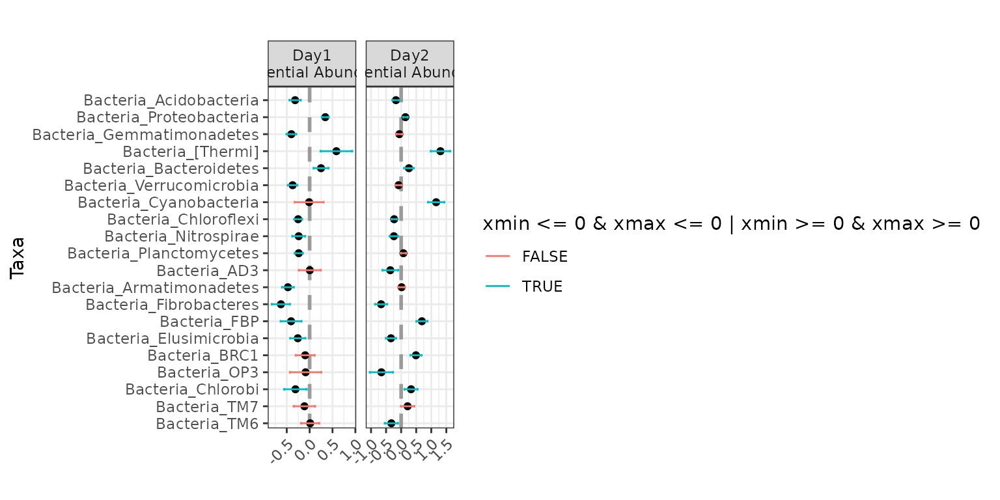
Jointly testing for differential abundance and differential
variability across Day, controlling for the effect of
Amdmt on abundance only:
ex4 <- differentialTest(formula = ~ Day + Amdmt,
phi.formula = ~ Day,
formula_null = ~ Amdmt,
phi.formula_null = ~ 1,
data = soil_full,
test = "Wald", boot = FALSE,
fdr_cutoff = 0.05)
plot(ex4)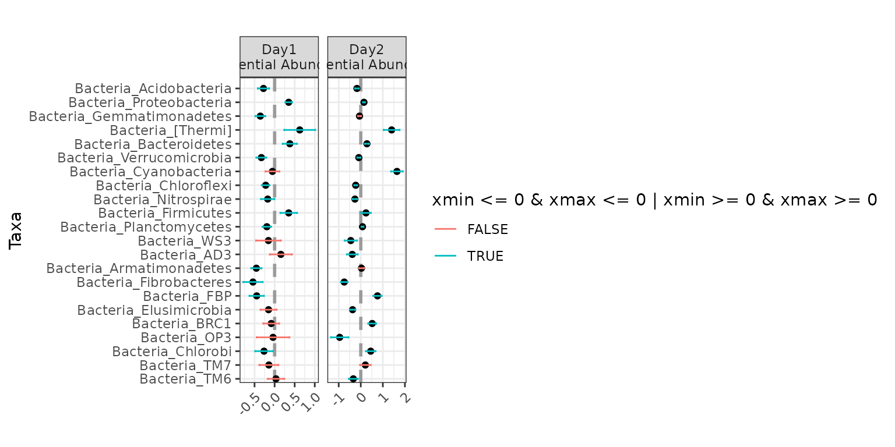
Jointly testing for differential abundance across Day
and differential abundance across Amdmt, controlling for
the effect of Day and Amdmt on dispersion:
ex5 <- differentialTest(formula = ~ Day + Amdmt,
phi.formula = ~ Day + Amdmt,
formula_null = ~ 1,
phi.formula_null = ~ Day + Amdmt,
data = soil_full,
test = "Wald", boot = FALSE,
fdr_cutoff = 0.05)
plot(ex5)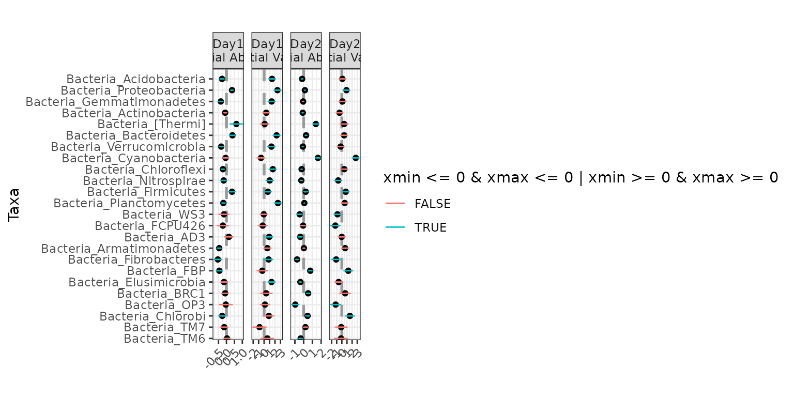
Jointly testing for differential abundance across Day,
and differential dispersion across Amdmt, controlling for
the effect of Day on Dispersion:
ex6 <- differentialTest(formula = ~ Day,
phi.formula = ~ Day + Amdmt,
formula_null = ~ 1,
phi.formula_null = ~ Day,
data = soil_full,
test = "Wald", boot = FALSE,
fdr_cutoff = 0.05)
plot(ex6)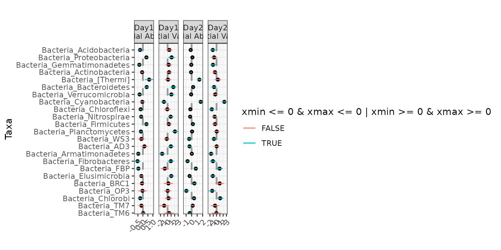
We now demonstrate examples with the IBD data set. We again begin by agglomerating for purposes of demonstration. We agglomerate to the genus level.
data(ibd_phylo_sample)
data(ibd_phylo_otu)
data(ibd_phylo_taxa)
ibd_phylo <- phyloseq::phyloseq(phyloseq::sample_data(ibd_phylo_sample),
phyloseq::otu_table(ibd_phylo_otu, taxa_are_rows = TRUE),
phyloseq::tax_table(ibd_phylo_taxa))
ibd <- ibd_phylo %>%
phyloseq::tax_glom("Genus") Testing for differential abundance across IBD status, without controlling for anything else:
ex7 <- differentialTest(formula = ~ ibd,
phi.formula = ~ 1,
formula_null = ~ 1,
phi.formula_null = ~ 1,
data = ibd,
test = "Wald", boot = FALSE,
fdr_cutoff = 0.05)
plot(ex7)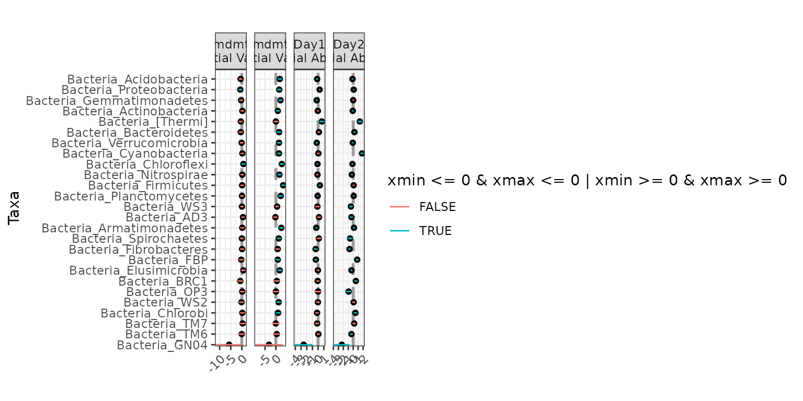
We can make the plot cleaner using the level parameter.
Here we will display both the family and genus information.
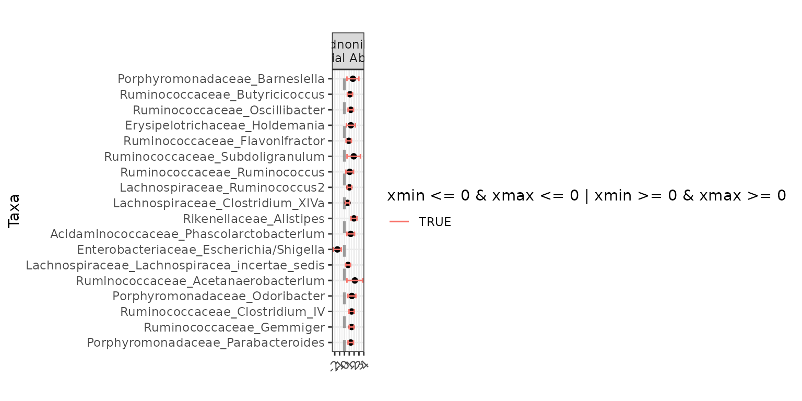
Jointly testing for differential abundance and differential variability across IBD status, without controlling for anything else:
ex8 <- differentialTest(formula = ~ ibd,
phi.formula = ~ ibd,
formula_null = ~ 1,
phi.formula_null = ~ 1,
data = ibd,
test = "Wald", boot = FALSE,
fdr_cutoff = 0.05)
plot(ex8, level = "Genus")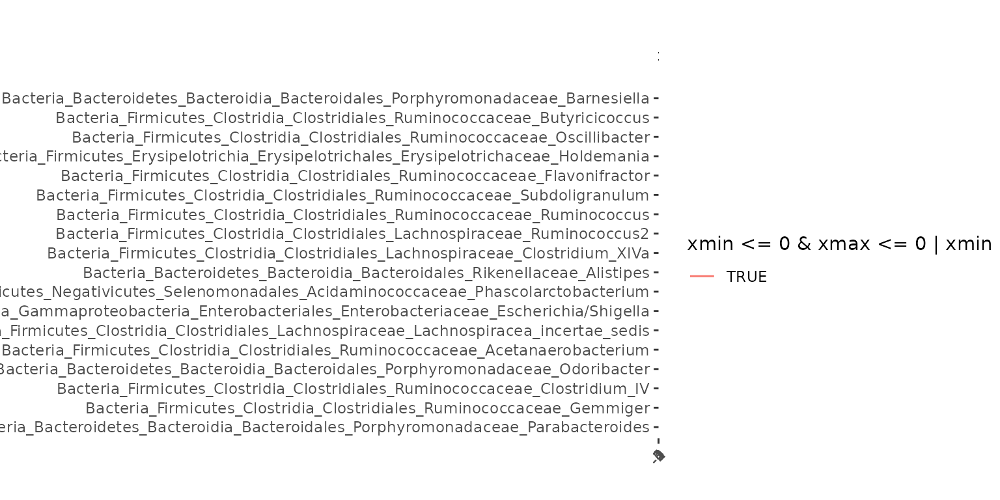